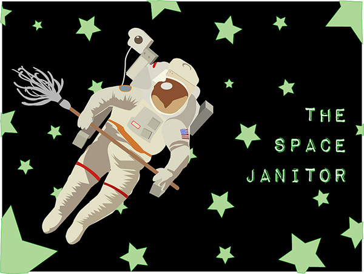

The janitor makes her way through the hallway with purpose, suctioning space dust and human debris from crevices of the space station. She is good at her job. She can push off from the walls in a steady trajectory without even looking; her eyes are always on the windows and the impossibly bright stars beyond.
The astronauts are good but unclean, thinks the space janitor. Like the astronaut who left liquid salt floating in little globs all over the kitchen today. Like the lady astronauts who leave bloody tampons unsecured and spill bits of powder into the air. Like the male astronauts who leave their dirty underwear drifting around their cabin modules, their worn-through tube socks smelling of cheese and old syrup. And the dead skin flakes—so many flakes she wonders how any skin could be left to wrap all that muscle and bone. Of course she rarely sees the astronauts, so while she assumes they still have skin, it is entirely possible they have shed their skin entirely, that they have, like strange insects, exchanged their soft, outside layers for hard, black, shining exoskeletons instead.
She almost never sees anyone except the night watchman, who is an elderly mute and who spends most of the night watching porn in the security office. She wouldn't say anything, though. She wouldn't even know who to say it to. She supposes the astronauts watch porn, too. Or maybe not; good people don't watch such things, she remembers from her time on earth.
The janitor knows that being good is not the same as being clean. She, for instance, is very clean, but she is not very good. She is still traveling on her way toward that. She told her pastor that she was coming up here to be closer to God, but really she just wanted to get away from Earth. She was tired of waiting to be recognized, waiting for someone to hear her name and turn, eyes too big, full of questions and sideshow curiosity.
People will think you're prideful, wanting to go up in space, her only friend said. He worked in the state-owned liquor store where she bought a case of Miller Lite every Tuesday morning after her shift at the hospital ended. She always worked nights; fewer waking bodies around, less human chaos. She never much liked talking, and after the close crowds of the jail, she liked to be far from the hum and buzz.
The space station staff liked her when they interviewed her -- she seemed polite and quiet and incurious. That was important. One of the astronauts, a bearded Russian with kind eyes, asked her a question: Will you be lonely in space? She looked at the faint lines scrawled around his eyes and forehead, and she supposed he had a family somewhere, maybe small children. Yes, she said, but I have always been lonely. The astronaut nodded, and she could see he understood. She could see his aquiline profile as he turned to someone off screen, and she knew she would get the job.
The astronauts occasionally get up during the night, and the janitor tries then to be a shadow, a grey bird. She ducks out of sight, floats to the ceiling in rooms where they wander, terrified they will appear different during the artificial night of space; sure she, too, will be different. Sure that starlight will strip away the years, will fall upon a thirteen-year-old girl alone on a dirt road, a bruise on her face and the mop clenched painfully in her broken fist. The things, the nightmare things fear could claim you for. The dark hurts in the veins, the heart-deep hurts in the buried parts of the body. The faces that chase her, even now, even in the farthest fields of space where nothing grows, nothing whispers, nothing lives or dies but the first things that ever got made in the universe. She isn't sure whether she believes in God or not, though she always told her pastor she did. She isn't sure any woman ought to believe in God.
In the lockup, most of the women didn't. They were on her side, they said. They said the name of God and the name of certain men and spat, teeth pressed together in a kind of crooked, inward anger. She learned to push a mop and broom in prison, learned to be useful. It was a good thing to be of some use in this world. Or, she revised, in this universe. It was hard sometimes, to get used to this new way of thinking, to bobbling round the earth like a second moon. She felt free, free of all the accumulated debris of a lifetime in sin and sacrifice, free of the burden of people for the first time in her whole flat life. She felt small and bright and diamond hard, a little star in the firmament.
The light was so bright here, always, despite the darkness of the spaces in between. The fluorescents scattered throughout the station, the milky white light of the nebulae. The twinkling reds and greens and yellows of the instrument panels. The soft blue glow of the earth over her shoulder. It was comforting, like a street on earth at Christmastime: a sleepy rainbow glow over these travelers straying so far from home.
Light of my life, he sang to her while he had her on his knee. She was just a baby, broad-faced and raw. And if nobody ever loved you, it was easy for somebody to tell you such pretty things. It was easy for you to sit by while they did such un-pretty things. She suctions up drops of urine and thinks about how it felt to hold a gun, how that boy and girl never even looked at her face while she held it. She dropped it like a snake; it felt like a dishonest thing, something so solid but, really, a dirty hollow pair of barrels. He laughed at her and picked it up, like he was made to hold it. His hands slid all over that steel and wood just like they did all over her.
She scrubs the fingerprints from the instrument panels, watches the lights flicker and dim. She wonders how many rags she'll go through, how many surfaces have to get clean before she can finally empty herself of the past. She doesn't know about metaphors but she knows that even the smallest human vessel has boundless storage for sorrow. Was there a right way to take in so much sorrow it burned clean through the lungs and heart? Was there a right way to atone?
There is, she thinks, a good kind of atonement in hard, honest work. And so each night she suctions, sweeps, mops, waxes, shakes out rugs, cleans and stocks the bathrooms, launders and changes the bedding, collects and disposes of trash, replaces lights, polishes the smooth metal, and washes the walls and ceilings. She cleans lint, dust, oil, and grease from their machines, cleans the glassware and lab equipment, soaps down sinks and sterilizes microscopes. She refills and labels tubes and bottles in her careful, neat handwriting. She keeps the station clean and shiny as the future.
She feels at home beyond the skies. She lied and said she came here to be close to God, but she feels further away from Him than ever. God was everywhere in the fields and farms of her childhood; God was on everybody's lips and in their books and on their walls. God was the fire and the twisted face and the crippled-up preacher. God rose from the steam off the fields, crystallized in the oil puddles at the service station, was the cold stones in the neighbor's pond after his boy died of polio. God was the iron lung around those family farms, squeezing, squeezing, and everybody dying inside.
She feels happiest near the deep green shadows pooled in the corners of the station, listening to the low hum against the endless silence of the stars. This feels safer than God. It feels honest. It feels removed from any human notion of heaven.
One night, she and the watchman are playing Blackjack on his laptop when the bearded Russian comes floating around the corner, pajama bottoms trailing and sleep-crusted eyes nearly shut. She and the watchman push back into the shadows, close the computer, try hard to be invisible. But the Russian doesn't even look their way; he glides past them to the wide wall of windows and puts his face to the glass like a child. Gde vy, he murmurs, and she doesn't know what the words mean, but she understands. The pastor once said death was the gift of a wise god—and she wondered whether he really believed that. To her death seems the opposite of wisdom, the opposite of mystery, the opposite of being out here in this vast wondrous place. Death is the opposite of lonely, and lonely is the only thing the janitor owns. It is the only thing that's hers. And that makes it beautiful, out here among the cold and bright beginnings.